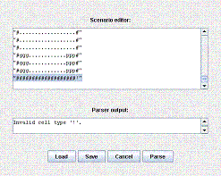
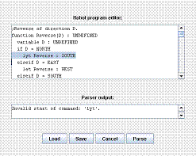
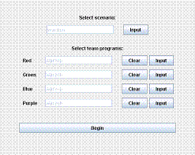
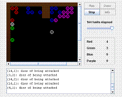

I wanted to design a language for dictating the behavior of characters in a simulated world, similar to Karel the Robot. My example programs teach the world and language properties, but beyond the basics NinjaRobots could potentially demonstrate concepts from artificial intelligence and game theory.
This ZIP file contains everything needed to begin: an executable JAR file, GIF images, and sample code you can load from within NinjaRobots. Note that if not already present, you must install the Java virtual machine from Sun Microsystems. You may also download my source code.
|  | Scenario editorAnalogous to the "World Editor" of Karel, the scenario editor facilitates dictation of world content and control over simulator parameters. Scenario files must follow a rigid but well-documented format (for an example, Load the west1.scn file). The Parse command rigorously checks the scenario for errors. It either returns to the main screen (success) or displays a helpful error message (failure). |
|  | Team program editorA similar interface allows users to Load, Save, edit, and Parse programs that control robot behavior. With prior programming experience, users can study the examples and documentation to learn the language. Again, the parser highlights problematic lines and displays a meaningful error message to help debug. Actual runtime errors in the simulator cause Robot elimination. |
|  | Startup ScreenOn startup, this screen provides access to the editors and the simulator itself. It accepts exactly one scenario and up to four programs which control distinct "robot teams". The simulator renders each team in a unique color. NinjaRobots enables the Begin command after parsing an error-free scenario. Not all scenarios use four teams, and teams without programming do nothing. |
|  | SimulatorThe simulator tracks the passage of tunits (time units) and team scores. A message window records significant events, and in future releases may display robot memory content. The sequence of events is functionally dependent on the scenario and programs. Programmers can therefore easily repeat experiments, but without the benefit of the excitement a touch of randomness would introduce. |
Each example consists of two files: a scenario file and a robot program of the same name. First Load and Parse the .scn file in the Scenario Editor. Then Load and Parse the .rob file in the Program Editor, multiple times if necessary. Finally, click Begin and Run the simulator.
| west1 | The |
|---|---|
| patrol | The program in this example uses a conditional statement and the special environment query operator to illustrate more complex movement. The robots patrol until |
| west2 | Robots can also |
| hack | The |
| comm | Robot generators build unowned robots, and treasure generators build unowned treasure. When a team claims a robot, the robot executes that team's program. Information a robot |
| war | Four robot teams wage war. The program makes full use of the language's features, including arrays, functions, and compound types. It could tolerate improvement though, as the simulation ends in stalemate. |
A robot's program runs from the beginning on each turn. It navigates conditionals, loops, and functions as any normal procedural language would. The program terminates when control reaches a choose ACTION command: the robot performs ACTION, and its turn ends.
The language supplies one primitive data type: an unsigned 8-bit integer with infix operators + (addition), - (subtraction), * (multiplication), / (division), % (modulus), and ' (environment query). Expression parsing respects the standard mathematical order of operations and parentheses, with ' given the highest precedence of all. When an operation overflows or becomes negative, NinjaRobots retains the 8 least significant bits and continues execution.
Below the numerical operators come three comparison operators: = (equality), < (less than), and > (greater than). These operators return either TRUE (an alias for 255) or FALSE (an alias for 0). Lastly, the bitwise/conjunctive operators & (AND) and | (OR) are evaluated.
All newly declared variables must initialize immediately (note that : means assignment, and the boolean = operator checks equality). This rule applies even when primitives combine to form arrays and composite types.
Arrays can serve as elements of composite types, and vice versa to any depth. Arrays and composites pass poorly to functions however, and non-primitive variables of like types cannot simply copy onto each other. If this project generates enough interest, I may fix these weaknesses in a second release.
Constants are simply primitives whose values cannot change. Several pre-defined constants help choose commands and expressions involving the query operator look more intuitive. Programmers can define their own constants too, perhaps for use in some inter-robot communication protocol of their own invention.
| Boolean | TRUE, FALSE |
|---|---|
| Directional | HERE, NORTH, EAST, SOUTH, WEST |
| Action | MOVE, WHISPER, TAKE, DROP, ATTACK |
| Characteristic | OCCUPANT, TEAM, HEALTH, WORD |
| Occupant | NOBODY, WALL, PRODUCER, ROBOT, TREASURE, POWERITEM, HEALTHITEM |
| Miscellaneous | UNDEFINED |
TRUE and FALSE have the values 255 and 0 respectively, so the useful properties TRUE = !FALSE and FALSE = !TRUE hold (! is the bitwise NOT operator).
Variables, arrays, types, functions, and constants declared within some block are visible within any child blocks, but invisible to the parent block (if one exists). Ambiguous names always resolve to the inner-most declaration with that name. As in Ada, programmers may declare any entity type inside any block.
Robots have two types of memory: a short-term memory which disappears when their turns end, and a long-term memory which persists. NinjaRobots treats variables declared in the global scope as long-term variables. They initialize on the robot's first turn, and never again: the robot "remembers" their values for next time. The robot forgets every other variable (those declared inside functions) between turns.